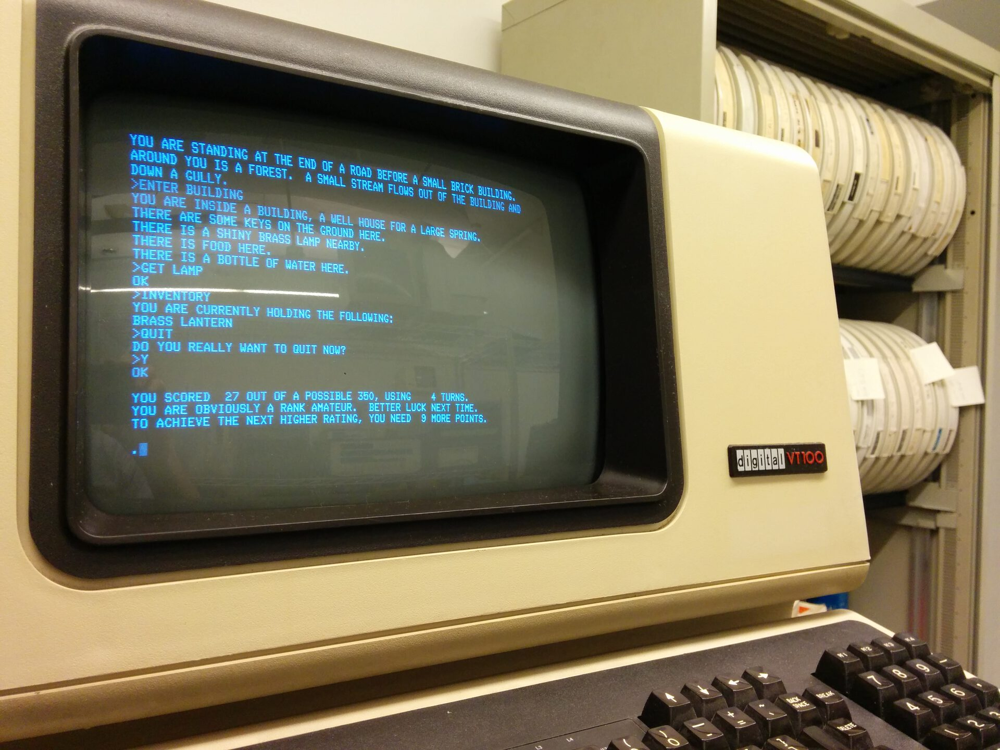

Corso intensivo — 16 ore in 4 giornate
FORMAZIONE IA
— BASE
Prof. Francesco Zaccaria
Scuola Futuro Lavoro, Milano — 28 Settembre . 1 Ottobre 2026
- Licenza:
- CC BY 4.0 — Creative Commons Attribuzione 4.0 Internazionale
- Materiali di terzi:
- diritti protetti e riservati ai rispettivi titolari; inseriti in buona fede a scopo didattico
- Contatti:
- linktr.ee/frazac — per segnalazioni e revisioni
Giornata 1
Introduzione
all'IA generativa
Chi sono
- Francesco Zaccaria: UI design e progettazione di oggetti digitali
- L'IA nel mio lavoro, un passo alla volta: manutenzione, sistemistica, codice, assistente
Quattro giornate, un percorso
- 1. Capire: come funziona l'IA generativa
- 2. Creare: testi e immagini
- 3. Lavorare: l'IA in ufficio
- 4. Governare: norme, rischi, responsabilità
Come lavoreremo
- Teoria: poche idee, chiare
- Laboratorio: le mani sulla tastiera
- Critica: domandarsi sempre perché
Scala ripresa da Perkins, Furze, Roe, MacVaugh — AI Assessment Scale (2024); MIT (2026)
Patto d'aula
- Per ogni attività dico a che livello si usa l'IA: da 1, senza IA, a 5, esplorazione libera
- Perché? Sempre domandarsi e domandare il perché
- Si impara faticando: è normale
Esercitazione
3′
Tre parole per dire che cos'è l'IA
- Scrivi tre parole su un foglio.
- Niente telefono, niente chatbot.
- Tienilo: lo riprendiamo giovedì.
01
Che cos'è
l'intelligenza?
Fare cose per risolvere un problema o raggiungere un obiettivo.
Sicuri che sia soltanto questo?
Propongo di considerare la domanda: “Le macchine possono pensare?”
Turing, A. M. (1950). Computing Machinery and Intelligence. Mind, 59(236), 433–460.
Il gioco dell'imitazione
- Un giudice parla per iscritto con due interlocutori nascosti
- Uno è una persona, l'altro una macchina
- Se il giudice non li distingue, la macchina “passa”
Turing, 1950
L'illusione
della comprensione

Il Turco meccanico, incisione da K. G. von Windisch, 1783 — pubblico dominio
Una macchina che gioca a scacchi…
- Costruita da Wolfgang von Kempelen nel 1770
- Batteva avversari in tutta Europa
- Dentro, nascosto, c'era un giocatore in carne e ossa

Clever Hans, 1910, foto di K. Krall — pubblico dominio
Clever Hans, il cavallo che “contava”
- Rispondeva ai calcoli battendo lo zoccolo
- Nel 1907 lo psicologo Oskar Pfungst scoprì il trucco
- Leggeva i segnali involontari di chi gli stava davanti
Pfungst, O. (1907). Das Pferd des Herrn von Osten
ELIZA e l'effetto ELIZA
- 1966: Joseph Weizenbaum scrive un programma che imita uno psicoterapeuta
- Poche regole, nessuna comprensione
- Eppure le persone gli si confidavano
Weizenbaum, J. (1976). Computer Power and Human Reason
Si confidavano con un software.
Come parlare con un orologio. O con un pianoforte.
02
Una storia
lunga settant'anni
Estate 1956, Dartmouth College: dieci ricercatori danno un nome a un'idea. Intelligenza artificiale.
Ogni aspetto dell'apprendimento o di qualunque altra caratteristica dell'intelligenza può in linea di principio essere descritto con tanta precisione da poter costruire una macchina che lo simuli.
McCarthy, J., Minsky, M., Rochester, N., Shannon, C. (1955). A Proposal for the Dartmouth Summer Research Project on Artificial Intelligence. Trad. it. nostra.
Sistemi esperti: se… allora…
- Un programmatore e un esperto scrivono le regole a mano
- Come un librogame: «Se apri la porta, vai al paragrafo 32»
- Funziona finché il mondo resta dentro le regole

Colossal Cave Adventure su terminale VT100 — foto di Autopilot, CC BY-SA 3.0, Wikimedia Commons
Crowther, W., Woods, D. (1976–77). Colossal Cave Adventure
Un'avventura fatta di regole
- 1976: Colossal Cave Adventure, un gioco solo testo
- «Sei in una strada, davanti a un piccolo edificio»
- Scrivi un comando, una regola decide cosa succede
Perché le regole scritte a mano non bastano
- Il mondo ha troppe eccezioni
- Ogni regola nuova ne rompe un'altra
- Non si impara dall'esperienza
Gli inverni dell'IA
- Anni Settanta: le promesse non mantenute tagliano i fondi
- Fine anni Ottanta: crolla il mercato dei sistemi esperti
- L'IA procede a ondate: entusiasmo, delusione, ripresa
Apprendimento automatico
- Apprendimento automatico (machine learning)
- Non scriviamo le regole: diamo esempi
- La macchina ricava da sola gli schemi (pattern)
Graham, P. (2002). A Plan for Spam
Un esempio: la posta indesiderata
- Migliaia di email già etichettate: “spam” o “non spam”
- Il sistema impara quali tratti contano
- Poi smista da solo le email nuove
- Oggi i filtri uniscono regole fisse e apprendimento automatico
Due fasi
- Addestramento (training): si estraggono gli schemi dai dati
- Inferenza (inference): si applicano ai casi nuovi
Reti neurali: miliardi di manopole
- Strati di “neuroni” collegati da numeri: i pesi
- Addestrare significa regolare le manopole
- I modelli di oggi ne hanno centinaia di miliardi
Deng, J. et al. (2009). ImageNet. CVPR; Krizhevsky, A. et al. (2012). NeurIPS
2009–2012: ImageNet
- Fei-Fei Li e il suo gruppo etichettano milioni di immagini
- 2012: una rete neurale profonda vince la gara di riconoscimento, con distacco
- Inizia l'era dell'apprendimento profondo (deep learning)
2017: l'architettura transformer
- Un nuovo modo di leggere il testo: tutto insieme, con l'attenzione
- Ogni parola “guarda” le altre per capire il contesto
- È la base di tutti i grandi modelli linguistici
Vaswani, A. et al. (2017). Attention Is All You Need. NeurIPS
2022: ChatGPT
- 30 novembre 2022: un'interfaccia di chat aperta a tutti
- Il linguaggio diventa l'interfaccia universale
- Per il pubblico, l'IA generativa “nasce” qui
Meno di quattro anni, più di un miliardo di utenti.
MIT Ad Hoc Committee on AI Use (2026). Report, p. 4
03
Dentro un grande
modello linguistico
LLM
- LLM (Large Language Model, grande modello linguistico)
- Un programma addestrato su enormi quantità di testo
- ChatGPT, Claude, Gemini, Mistral, DeepSeek…
Prevedere
la parola
successiva
Token: parole e pezzi di parole
- Il modello non legge lettere né parole intere
- Legge token: una parola o un suo frammento
- “intelligenza” → “intel” + “ligenza”
Una distribuzione di probabilità
“Oggi a Milano il cielo è…”
- nuvoloso 41%
- sereno 32%
- grigio 15%
- viola 0,1%
Valori illustrativi
Esercitazione
5′
Indovina il token
- Leggo l'inizio di una frase.
- Scrivete la parola successiva.
- Confrontiamo: quante risposte uguali?
Il dialogo è una finzione
- Il modello completa un testo che ha questa forma:
- “Utente: … / Assistente: …”
- Scrive la parte dell'assistente, un token alla volta
La finestra di contesto
- Finestra di contesto (context window)
- Tutto ciò che il modello “vede” in quel momento
- Quello che resta fuori, per lui non esiste
Rappresentazioni vettoriali
- Rappresentazioni vettoriali (embeddings)
- Ogni token diventa una lista di numeri
- Un punto in uno spazio con migliaia di dimensioni
Conoscerai una parola dalla compagnia che frequenta.
Firth, J. R. (1957). A Synopsis of Linguistic Theory, 1930–1955. In Studies in Linguistic Analysis. Trad. it. nostra.
“Pesca”: frutto o sport?
- “Ho mangiato una pesca” — frutto
- “Andiamo a pesca” — attività
- Il contesto sposta il vettore: il significato cambia
Quattro fasi di addestramento
- 1. Pre-addestramento
- 2. Affinamento supervisionato
- 3. Allineamento
- 4. Ricompense verificabili
1. Pre-addestramento
- Pre-addestramento (pre-training)
- Il modello legge una parte enorme del web e dei libri
- Impara a prevedere il testo: nasce un completatore
2. Affinamento supervisionato
- Affinamento supervisionato (supervised fine-tuning, SFT)
- Esempi di dialoghi scritti da persone
- Il completatore impara a fare l'assistente
3. Allineamento
- RLHF (Reinforcement Learning from Human Feedback, apprendimento per rinforzo da valutazioni umane)
- Persone scelgono la risposta migliore tra due
- Più sicurezza, ma anche il rischio di compiacere
4. Ricompense verificabili
- RLVR (Reinforcement Learning from Verifiable Rewards, apprendimento per rinforzo da ricompense verificabili)
- Problemi con una soluzione controllabile: matematica, codice
- Qui i modelli sono migliorati di più
04
Imparare dal mondo,
imparare dai dati
Held & Hein, 1963
- Due gattini cresciuti al buio, poi messi nel carosello
- Uno cammina, l'altro è trasportato in una gondola
- Vedono esattamente le stesse strisce
Held, R., Hein, A. (1963). Journal of Comparative and Physiological Psychology, 56(5), 872–876
Il risultato
- Il gattino attivo impara a vedere e a muoversi
- Quello passivo no: inciampa, non evita il vuoto
- Vedere non basta: serve agire nel mondo
Apprendimento relazionale, apprendimento statistico
- Noi: anni di esperienza, corpo, relazioni
- Il modello: testo, tanto testo, nient'altro
- Due modi diversi di costruire un mondo
La nostra rappresentazione
- Il tempo che passa
- Il luogo in cui siamo
- Quello che sentiamo
La loro rappresentazione
- Distribuzionale: il significato viene dalla vicinanza tra parole
- Nessun corpo, nessun tempo vissuto
- Eppure molto sofisticata
Hanno una rappresentazione del mondo.
È coerente con la nostra?
Emozioni dentro i modelli?
- Chi studia l'interno dei modelli trova zone legate alle emozioni
- Non perché “sentano”
- Perché servono a prevedere meglio il testo umano
Pensiero veloce, pensiero lento
- Sistema 1: intuitivo, rapido, automatico
- Sistema 2: riflessivo, lento, faticoso
Kahneman, D. (2012). Pensieri lenti e veloci. Milano: Mondadori
Sistema 0
- L'IA come pensiero esterno che arriva prima dei nostri
- Ci offre risposte già pronte
- Il rischio: smettere di pensare da soli
Chiriatti, M. et al. (2024). Nature Human Behaviour, 8, 1829–1830
05
Quanto è generale
l'IA generale?
IA ristretta
- IA ristretta (narrow AI): un solo compito
- Deep Blue gioca a scacchi, e basta
- Il filtro antispam smista email, e basta
AGI
- AGI (Artificial General Intelligence, intelligenza artificiale generale)
- Un sistema capace di affrontare qualunque compito intellettuale umano
- Obiettivo dichiarato di molte aziende
Gli LLM
non sono AGI.
Non ancora?
AGI testuale
- Tutto passa dal linguaggio
- Leggere, scrivere, ragionare, programmare
- Il mondo conosciuto solo attraverso le parole
AGI multimodale
- Multimodale: più canali insieme
- Vedere, ascoltare, parlare, agire
- Più vicina al nostro modo di stare al mondo
Il dibattito
- Per alcuni basta far crescere i modelli
- Per altri manca qualcosa di essenziale
- Chomsky: una «falsa promessa», senza vera spiegazione del mondo
Chomsky, N., Roberts, I., Watumull, J. (2023). The False Promise of ChatGPT. The New York Times, 8 marzo
Prestazioni frastagliate
- Bravissima in un compito, pessima in quello accanto
- Il confine non si vede a occhio
- Chi la usa fuori dal confine lavora peggio
Dell'Acqua, F. et al. (2023). Navigating the Jagged Technological Frontier. HBS Working Paper 24-013
Il risultato dipende da noi
- Dal contesto che diamo
- Da come formuliamo la richiesta
- Dall'interazione: il punto è il dialogo
Un assaggio: l'IA è anche geopolitica
- Stati Uniti e Cina corrono sulla scala: dati, calcolo, energia
- L'Europa cerca un'altra strada
- Ne parliamo giovedì
Contucci, P. (2026). La dimensione geopolitica dell'IA. Rivista il Mulino
06
Allucinazioni
ed errori
L'allucinazione non è un guasto
- Il modello sceglie la continuazione più probabile
- Probabile non vuol dire vero
- Inventare è il suo modo normale di funzionare
Un token sbagliato trascina la frase
- “La capitale dell'Australia è S…”
- Se esce “Sydney”, il resto sarà coerente con l'errore
- Il modello non torna indietro: va avanti
Un caso vero: Mata contro Avianca
- 2023, New York: un avvocato presenta in tribunale sei precedenti
- Li aveva trovati con ChatGPT
- Non esistevano
Mata v. Avianca, Inc., 22-cv-1461 (S.D.N.Y. 2023)
Fandonie e bugie
- La bugia vuole ingannare
- La fandonia è una voce infondata, detta con sicurezza
- Il modello non mente: racconta fandonie
Errori e sviste
- Errore: il piano è sbagliato
- Svista: il piano è giusto, l'esecuzione no
Norman, D. A. (1988). The Design of Everyday Things
L'errore umano è prevedibile.
L'errore dell'IA no.

E. Muybridge, The Horse in Motion, 1878 — pubblico dominio
Esplorare l'errore per capire
- Muybridge fotografò ciò che l'occhio non vedeva
- Gli errori dell'IA mostrano come funziona davvero
- Cercarli sistematicamente: mistakes mining
Esercitazione
20′
Safari degli errori
- Chiedi a un chatbot la biografia di una persona poco nota della tua città.
- Verifica tre fatti su fonti indipendenti.
- Annota dove sbaglia e con quanta sicurezza lo dice.
Esercitazione
15′
Safari degli errori: condivisione
- Ogni coppia racconta l'errore più interessante.
- Era prevedibile?
- Come ce ne saremmo accorti senza verificare?
Le parole della giornata
- token — finestra di contesto — rappresentazioni vettoriali
- addestramento — inferenza — allineamento
- IA ristretta — AGI — allucinazione
Tre idee da ricordare
- Un LLM prevede la parola successiva
- Verosimile non vuol dire vero
- La frontiera è frastagliata: verificare sempre
Fonti della giornata — 1/3
- Chiriatti, M., Ganapini, M., Panai, E., Ubiali, M., Riva, G. (2024). The case for human–AI interaction as system 0 thinking. Nature Human Behaviour, 8, 1829–1830.
- Chomsky, N., Roberts, I., Watumull, J. (2023, 8 marzo). The False Promise of ChatGPT. The New York Times.
- Contucci, P. (2026, 13 marzo). La dimensione geopolitica dell'IA. Rivista il Mulino.
- Crowther, W., Woods, D. (1976–77). Colossal Cave Adventure [videogioco].
- Dell'Acqua, F. et al. (2023). Navigating the Jagged Technological Frontier. Harvard Business School Working Paper 24-013.
- Deng, J., Dong, W., Socher, R., Li, L.-J., Li, K., Fei-Fei, L. (2009). ImageNet: A large-scale hierarchical image database. CVPR 2009.
Fonti della giornata — 2/3
- Graham, P. (2002). A Plan for Spam. paulgraham.com.
- Held, R., Hein, A. (1963). Movement-produced stimulation in the development of visually guided behavior. Journal of Comparative and Physiological Psychology, 56(5), 872–876.
- Kahneman, D. (2012). Pensieri lenti e veloci. Milano: Mondadori.
- Krizhevsky, A., Sutskever, I., Hinton, G. E. (2012). ImageNet Classification with Deep Convolutional Neural Networks. NeurIPS, 25.
- McCarthy, J., Minsky, M., Rochester, N., Shannon, C. (1955). A Proposal for the Dartmouth Summer Research Project on Artificial Intelligence.
- MIT Ad Hoc Committee on AI Use (2026). Report of MIT's Ad Hoc Committee on AI Use in Teaching, Learning, and Research Training.
Fonti della giornata — 3/3
- Norman, D. A. (1988). The Design of Everyday Things. New York: Basic Books.
- Perkins, M., Furze, L., Roe, J., MacVaugh, J. (2024). The Artificial Intelligence Assessment Scale (AIAS). Journal of University Teaching and Learning Practice, 21(6).
- Turing, A. M. (1950). Computing Machinery and Intelligence. Mind, 59(236), 433–460.
- Vaswani, A. et al. (2017). Attention Is All You Need. Advances in Neural Information Processing Systems, 30.
- Weizenbaum, J. (1976). Computer Power and Human Reason. San Francisco: W. H. Freeman.